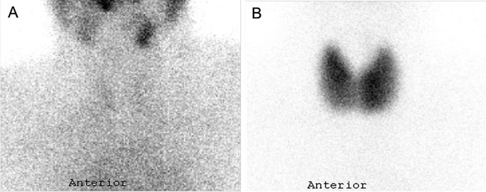
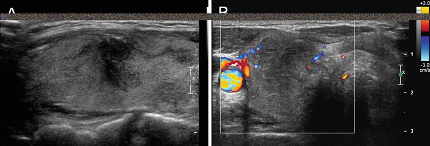
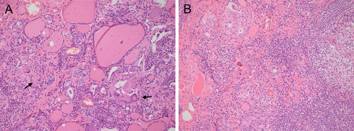

<!DOCTYPE html>
<html lang="en">
<head>
<meta charset="UTF-8">
<meta name="viewport" content="width=device-width, initial-scale=1.0">
<title>Surgical Insight Hub — Acute and Subacute Thyroiditis Monograph</title>
<link href="https://fonts.googleapis.com/css2?family=Playfair+Display:wght@400;600;700&family=Source+Serif+4:ital,opsz,wght@0,8..60,300;0,8..60,400;0,8..60,600;1,8..60,300;1,8..60,400&family=JetBrains+Mono:wght@400;500&display=swap" rel="stylesheet">
<link rel="stylesheet" href="../../css/theme.css?v=4.0.0">
<link rel="stylesheet" href="../../css/shared.css">
<script>
  const savedTheme = localStorage.getItem('sih-theme') || 'light';
  if (savedTheme === 'dark') document.documentElement.setAttribute('data-theme', 'dark');
</script>
<style>
:root {
  --primary:   #4C1D95; 
  --primary-dk:#2E1065;
  --primary-lt:#F5F3FF;
  --accent:    #7C3AED;
  --accent2:   #E11D48;
  --gold:      #D97706;
  --gold-lt:   #FEF3C7;
  --red:       #E11D48;
  --red-lt:    #FFF1F2;
  --bg:        #FAFAFA;
  --bg2:       #F4F4F5;
  --border:    #E5E7EB;
  --text:      #0F172A;
  --muted:     #64748B;
  --white:     #FFFFFF;
  --sidebar-w: 320px;
}
[data-theme="dark"] {
  --bg: #0A0702;
  --bg2: #140E05;
  --text: #F3F4F6;
  --muted: #A3A3A3;
  --border: rgba(255,255,255,0.08);
  --primary-lt: #2E1065;
  --white: #140E05;
}
*,*::before,*::after{box-sizing:border-box;margin:0;padding:0;}
html{scroll-behavior:smooth;}
body{font-family:'Source Serif 4',Georgia,serif;background:var(--bg);color:var(--text);font-size:16px;line-height:1.75;}

#sidebar {
  position: fixed; top: 0; left: 0; width: var(--sidebar-w); height: 100vh;
  background: var(--primary-dk); color: #F5F3FF;
  display: flex; flex-direction: column;
  z-index: 1000; overflow: hidden;
  transform: translateX(-100%);
  transition: transform 0.3s cubic-bezier(0.4, 0, 0.2, 1);
  box-shadow: 4px 0 24px rgba(0,0,0,0.4);
}
body.sidebar-open #sidebar { transform: translateX(0); }

#sidebar-overlay {
  position: fixed; top: 0; left: 0; width: 100vw; height: 100vh;
  background: rgba(46, 16, 101, 0.7); backdrop-filter: blur(3px);
  z-index: 950; opacity: 0; pointer-events: none; transition: opacity 0.3s ease;
}
body.sidebar-open #sidebar-overlay { opacity: 1; pointer-events: auto; }

#sidebar-toggle {
  position: fixed; top: 72px; left: 24px; z-index: 900;
  background: var(--primary); color: white;
  border: none; border-radius: 30px;
  padding: 10px 18px; font-family: 'JetBrains Mono', monospace; font-size: 13px; font-weight: 600;
  letter-spacing: 0.05em; cursor: pointer; box-shadow: 0 4px 12px rgba(0,0,0,0.25);
  display: flex; align-items: center; gap: 8px; transition: all 0.2s;
}
#sidebar-toggle:hover { background: var(--accent2); transform: translateY(-2px); }

#sidebar-header{padding:20px 20px 14px;border-bottom:1px solid rgba(255,255,255,0.08);flex-shrink:0;}
#sidebar-header .logo{font-family:'Playfair Display',serif;font-size:13px;font-weight:700;color:var(--accent2);letter-spacing:0.08em;text-transform:uppercase;margin-bottom:4px;}
#sidebar-header .sub{font-size:10.5px;color:rgba(245,243,255,0.6);letter-spacing:0.04em;}
#sidebar-search{padding:10px 14px;border-bottom:1px solid rgba(255,255,255,0.05);flex-shrink:0;}
#sidebar-search input{width:100%;background:rgba(255,255,255,0.05);border:1px solid rgba(255,255,255,0.1);border-radius:6px;color:#F5F3FF;padding:6px 10px;font-size:12px;font-family:'Source Serif 4',serif;outline:none;transition:border-color 0.2s;}
#sidebar-search input::placeholder{color:rgba(245,243,255,0.4);}
#sidebar-search input:focus{border-color:var(--accent2);}
#sidebar-nav{flex:1;overflow-y:auto;padding:8px 0 20px;}
#sidebar-nav::-webkit-scrollbar{width:4px;}
#sidebar-nav::-webkit-scrollbar-thumb{background:rgba(255,255,255,0.15);border-radius:2px;}
.vol-label{font-size:9.5px;font-weight:600;letter-spacing:0.12em;text-transform:uppercase;color:var(--accent2);padding:14px 18px 4px;}
.nav-item{display:block;padding:8px 18px 8px 22px;font-size:12.5px;color:rgba(245,243,255,0.8);text-decoration:none;border-left:2px solid transparent;transition:all 0.15s;line-height:1.4;}
.nav-item:hover{color:#fff;background:rgba(255,255,255,0.03);border-left-color:rgba(225,29,72,0.5);}
.nav-item.active{color:#fff;background:rgba(255,255,255,0.06);border-left-color:var(--accent2);font-weight:600;}
.nav-item .num{font-family:'JetBrains Mono',monospace;font-size:10px;color:rgba(245,243,255,0.4);margin-right:6px;}

#main{margin-left:0; min-height:100vh;}
#hero{background:linear-gradient(135deg,var(--primary-dk) 0%,#4C1D95 60%,#2E1065 100%);color:white;padding:120px 72px 60px;position:relative;overflow:hidden;}
#hero::before{content:'';position:absolute;top:-60px;right:-60px;width:380px;height:380px;background:radial-gradient(circle,rgba(225,29,72,0.15) 0%,transparent 70%);pointer-events:none;}
#hero::after{content:'';position:absolute;bottom:0;left:0;right:0;height:3px;background:linear-gradient(90deg,var(--accent2),var(--gold),transparent);}
#hero .eyebrow{font-family:'JetBrains Mono',monospace;font-size:11px;letter-spacing:0.16em;color:var(--accent2);text-transform:uppercase;margin-bottom:14px;}
#hero h1{font-family:'Playfair Display',serif;font-size:42px;font-weight:700;line-height:1.15;margin-bottom:10px;color:#fff;}
#hero .subtitle{font-size:18px;color:rgba(255,255,255,0.8);font-style:italic;margin-bottom:28px;}
#hero .badges{display:flex;gap:10px;flex-wrap:wrap;}
#hero .badge{background:rgba(255,255,255,0.1);border:1px solid rgba(255,255,255,0.2);border-radius:20px;padding:4px 14px;font-size:12px;color:rgba(255,255,255,0.95);font-family:'JetBrains Mono',monospace;}

.content-wrap{max-width:900px;margin:0 auto;padding:40px 48px 80px;}

.callout{margin:18px 0;padding:14px 18px;border-radius:0 8px 8px 0;border-left:4px solid;font-size:14px;line-height:1.65;}
.callout .label{font-family:'JetBrains Mono',monospace;font-size:10px;font-weight:600;letter-spacing:0.12em;text-transform:uppercase;display:block;margin-bottom:4px;}
.callout.pearl{background:var(--gold-lt);border-color:var(--gold);color:var(--text);}
.callout.pearl .label{color:var(--gold);}
.callout.warn{background:var(--red-lt);border-color:var(--red);color:var(--text);}
.callout.warn .label{color:var(--red);}

@media(max-width:900px) {
  .content-wrap { padding: 20px 20px 60px; }
  #hero { padding: 80px 20px 40px; }
  #hero h1 { font-size: 30px; }
  #sidebar-toggle { top: 64px; left: 16px; }
}
</style>
<link rel="icon" type="image/png" href="../../assets/images/Surgical_Insight_Hub_Logo.png">
</head>
<body>

<nav class="nav" id="mainNav">
  <div class="nav-left">
    <a href="../../index.html" class="nav-pill">
      <div class="nav-logo-img">
        
      </div>
      <div>
        <div class="nav-brand-text">Surgical Insight Hub</div>
        <div class="nav-brand-sub">The Residency Journal</div>
      </div>
    </a>
  </div>
  <div class="nav-links-pill">
    <a href="../../index.html">Home</a>
    <a href="../../notes.html" class="active">Notes</a>
    <a href="../operative_approach.html">Playbook</a>
    <a href="../../arena.html?v=4.0.0">MCQ Arena</a>
    <a href="../../podcast.html">Podcast</a>
    <a href="../../surgery-talk.html">Surgery Talk</a>
    <a href="../../about.html">About</a>
  </div>
  <div class="nav-right">
    <button class="theme-toggle" id="themeToggle" aria-label="Toggle Theme">
      <svg id="moonIcon" viewBox="0 0 24 24" width="18" height="18"><path d="M21 12.79A9 9 0 1 1 11.21 3 7 7 0 0 0 21 12.79z"></path></svg>
      <svg id="sunIcon" style="display:none;" viewBox="0 0 24 24" width="18" height="18"><circle cx="12" cy="12" r="5"></circle><line x1="12" y1="1" x2="12" y2="3"></line><line x1="12" y1="21" x2="12" y2="23"></line><line x1="4.22" y1="4.22" x2="5.64" y2="5.64"></line><line x1="18.36" y1="18.36" x2="19.78" y2="19.78"></line><line x1="1" y1="12" x2="3" y2="12"></line><line x1="21" y1="12" x2="23" y2="12"></line><line x1="4.22" y1="19.78" x2="5.64" y2="18.36"></line><line x1="18.36" y1="5.64" x2="19.78" y2="4.22"></line></svg>
    </button>
    <a href="https://t.me/sugicalInsightHub" target="_blank" class="nav-tg-btn" title="Join Telegram">
      <svg width="18" height="18" viewBox="0 0 24 24" fill="#f0d080"><path d="M12 0C5.37 0 0 5.37 0 12s5.37 12 12 12 12-5.37 12-12S18.63 0 12 0zm5.89 8.22l-1.97 9.28c-.15.66-.54.82-1.08.51l-3-2.21-1.45 1.39c-.16.16-.3.3-.61.3l.21-3.05 5.56-5.02c.24-.21-.05-.33-.37-.12l-6.87 4.33-2.96-.92c-.64-.2-.66-.64.14-.95l11.57-4.46c.54-.19 1.01.13.83.94z"/></svg>
    </a>
    <a href="../../arena.html?v=4.0.0" class="nav-btn arena-btn">MCQ Arena</a>
  </div>
</nav>

<div class="mob-nav-overlay" id="mobNavOverlay" onclick="closeMobNav()"></div>
<div class="mob-nav-sheet" id="mobNavSheet">
  <div class="mob-nav-handle"></div>
  <a href="../../index.html" onclick="closeMobNav()">Home</a>
  <a href="../../notes.html" onclick="closeMobNav()">Notes</a>
  <a href="../operative_approach.html" onclick="closeMobNav()">Playbook</a>
  <a href="../../podcast.html" onclick="closeMobNav()">Podcast</a>
  <a href="../../surgery-talk.html" onclick="closeMobNav()">Surgery Talk</a>
  <a href="../../arena.html" onclick="closeMobNav()">MCQ Arena</a>
  <a href="../../about.html" onclick="closeMobNav()">About</a>
  <a href="https://t.me/sugicalInsightHub" target="_blank" rel="noopener" onclick="closeMobNav()" style="color: var(--brand-gold); font-weight: 800;">Join Telegram Community</a>
</div>

<button id="sidebar-toggle" onclick="toggleSidebar()">
  <span>📜</span> Chapter Navigation
</button>
<div id="sidebar-overlay" onclick="closeSidebar()"></div>

<aside id="sidebar">
  <div id="sidebar-header">
    <div class="logo">Surgical Insight Hub</div>
    <div class="sub">Thyroid Dx Textbook Series</div>
  </div>
  <div id="sidebar-search">
    <input type="text" placeholder="Search chapters..." oninput="filterNav(this.value)">
  </div>
  <nav id="sidebar-nav">
    <div class="vol-label">All 25 Endocrine Chapters</div>
    <a class="nav-item" href="endocrine_ch01_regulation_of_thyroid_function.html"><span class="num">Ch 1</span>Regulation of Thyroid Function, Synthesis, and Function of Thyroid Hormones</a>
<a class="nav-item" href="endocrine_ch02_tests_of_thyroid_function.html"><span class="num">Ch 2</span>Tests of Thyroid Function</a>
<a class="nav-item" href="endocrine_ch03_thyroid_autoantibodies.html"><span class="num">Ch 3</span>Thyroid Autoantibodies</a>
<a class="nav-item" href="endocrine_ch04_nonisotopic_thyroid_imaging.html"><span class="num">Ch 4</span>Nonisotopic Thyroid Imaging</a>
<a class="nav-item" href="endocrine_ch05_nontoxic_goiter.html"><span class="num">Ch 5</span>Nontoxic Goiter</a>
<a class="nav-item" href="endocrine_ch06_thyroid_nodule.html"><span class="num">Ch 6</span>Thyroid Nodule</a>
<a class="nav-item" href="endocrine_ch07_hashimoto_s_thyroiditis.html"><span class="num">Ch 7</span>Hashimoto´s Thyroiditis</a>
<a class="nav-item" href="endocrine_ch08_postpartum_thyroiditis_and_sil.html"><span class="num">Ch 8</span>Postpartum Thyroiditis and Silent Thyroiditis</a>
<a class="nav-item active" href="endocrine_ch09_acute_and_subacute_thyroiditis.html"><span class="num">Ch 9</span>Acute and Subacute Thyroiditis</a>
<a class="nav-item" href="endocrine_ch10_classification_and_etiopathoge.html"><span class="num">Ch 10</span>Classification and Etiopathogenesis of Hypothyroidism</a>
<a class="nav-item" href="endocrine_ch11_congenital_hypothyroidism.html"><span class="num">Ch 11</span>Congenital Hypothyroidism</a>
<a class="nav-item" href="endocrine_ch12_central_hypothyroidism.html"><span class="num">Ch 12</span>Central Hypothyroidism</a>
<a class="nav-item" href="endocrine_ch13_diagnosis_and_treatment_of_hyp.html"><span class="num">Ch 13</span>Diagnosis and Treatment of Hypothyroidism</a>
<a class="nav-item" href="endocrine_ch14_graves_disease.html"><span class="num">Ch 14</span>Graves´ Disease</a>
<a class="nav-item" href="endocrine_ch15_graves_ophthalmopathy.html"><span class="num">Ch 15</span>Graves´ Ophthalmopathy</a>
<a class="nav-item" href="endocrine_ch16_treatment_of_graves_disease.html"><span class="num">Ch 16</span>Treatment of Graves´ Disease</a>
<a class="nav-item" href="endocrine_ch17_toxic_adenoma_and_multinodular.html"><span class="num">Ch 17</span>Toxic Adenoma and Multinodular Toxic Goiter</a>
<a class="nav-item" href="endocrine_ch18_pathogenesis_of_thyroid_carcin.html"><span class="num">Ch 18</span>Pathogenesis of Thyroid Carcinoma</a>
<a class="nav-item" href="endocrine_ch19_differentiated_thyroid_carcino.html"><span class="num">Ch 19</span>Differentiated Thyroid Carcinoma of Follicular Origin</a>
<a class="nav-item" href="endocrine_ch20_medullary_carcinoma.html"><span class="num">Ch 20</span>Medullary Carcinoma</a>
<a class="nav-item" href="endocrine_ch21_anaplastic_and_other_forms_of_.html"><span class="num">Ch 21</span>Anaplastic and Other Forms of Thyroid Carcinoma</a>
<a class="nav-item" href="endocrine_ch22_new_medical_treatment_for_thyr.html"><span class="num">Ch 22</span>New (Medical) Treatment for Thyroid Carcinoma</a>
<a class="nav-item" href="endocrine_ch23_thyroid_physiology_and_thyroid.html"><span class="num">Ch 23</span>Thyroid Physiology and Thyroid Diseases in Pregnancy</a>
<a class="nav-item" href="endocrine_ch24_non_thyroidal_illness.html"><span class="num">Ch 24</span>Non-thyroidal Illness</a>
<a class="nav-item" href="endocrine_ch25_drugs_and_other_substances_int.html"><span class="num">Ch 25</span>Drugs and Other Substances Interfering with Thyroid Function</a>

  </nav>
</aside>

<main id="main">
<header id="hero">
  <div class="eyebrow">Endocrine Surgery · Chapter 9</div>
  <h1>Acute and Subacute Thyroiditis</h1>
  <p class="subtitle">Structured Surgical Monograph formatted with fluid prose, inline textbook diagnostic plates, and clinical guidance.</p>
  <div class="badges">
    <span class="badge">Chapter 9</span>
    <span class="badge">Inline Plates</span>
    <span class="badge">Thyroid Dx PDF</span>
  </div>
</header>

<div class="content-wrap">
  <section class="topic">
    
    <div class="callout pearl" style="margin-bottom:28px;">
      <span class="label">🎓 TEXTBOOK MONOGRAPH — THYROID DX</span>
      Full surgical monograph extracted directly from <strong>Thyroid Pathology and Laboratory Diagnostics</strong> (Chapter 9: Acute and Subacute Thyroiditis). Features complete text, formatted clinical guidance, and inline textbook figures.
    </div>
<ul style="margin:12px 0 20px 20px;">
<li style="margin-bottom:8px; line-height:1.65;"><strong>Acute and Subacute</strong> Thyroiditis Karen M. Rothacker and John P. Walsh Contents</li>
</ul>
<h3 style="font-family:'Playfair Display',serif; font-size:20px; color:var(--primary); margin:32px 0 14px; border-bottom:1px solid var(--border); padding-bottom:6px;">Introduction ......................................................................................</h3>

                <div style="display:flex; gap:16px; margin:20px 0; padding:16px; border-radius:14px; border:1px solid var(--border); background:var(--bg2); align-items:center;">
                  <div style="width:180px; min-width:180px; height:140px; border-radius:10px; overflow:hidden; border:1px solid var(--border); background:#fff; display:flex; align-items:center; justify-content:center; padding:6px; flex-shrink:0;">
                    
                  </div>
                  <div style="flex:1;">
                    <div style="font-family:'JetBrains Mono',monospace; font-size:11px; font-weight:700; color:var(--accent2); text-transform:uppercase; margin-bottom:6px;">Textbook Illustration &amp; Diagnostic Plate</div>
                    <div style="font-size:13.5px; color:var(--muted); line-height:1.5;">High-resolution diagnostic plate illustrating introduction ...................................................................................... in Chapter 9.</div>
                  </div>
                </div>
<p style="font-size:16px; line-height:1.75; margin-bottom:16px; color:var(--text);">Infectious Thyroiditis ............................................................................ Presentation ..................................................................................</p>
<h3 style="font-family:'Playfair Display',serif; font-size:20px; color:var(--primary); margin:32px 0 14px; border-bottom:1px solid var(--border); padding-bottom:6px;">Etiology ......................................................................................</h3>

                <div style="display:flex; gap:16px; margin:20px 0; padding:16px; border-radius:14px; border:1px solid var(--border); background:var(--bg2); align-items:center;">
                  <div style="width:180px; min-width:180px; height:140px; border-radius:10px; overflow:hidden; border:1px solid var(--border); background:#fff; display:flex; align-items:center; justify-content:center; padding:6px; flex-shrink:0;">
                    
                  </div>
                  <div style="flex:1;">
                    <div style="font-family:'JetBrains Mono',monospace; font-size:11px; font-weight:700; color:var(--accent2); text-transform:uppercase; margin-bottom:6px;">Textbook Illustration &amp; Diagnostic Plate</div>
                    <div style="font-size:13.5px; color:var(--muted); line-height:1.5;">High-resolution diagnostic plate illustrating etiology ...................................................................................... in Chapter 9.</div>
                  </div>
                </div>
<p style="font-size:16px; line-height:1.75; margin-bottom:16px; color:var(--text);">Diagnostic Evaluation ....................................................................... Differential Diagnosis ........................................................................</p>
<h3 style="font-family:'Playfair Display',serif; font-size:20px; color:var(--primary); margin:32px 0 14px; border-bottom:1px solid var(--border); padding-bottom:6px;">Treatment .....................................................................................</h3>

                <div style="display:flex; gap:16px; margin:20px 0; padding:16px; border-radius:14px; border:1px solid var(--border); background:var(--bg2); align-items:center;">
                  <div style="width:180px; min-width:180px; height:140px; border-radius:10px; overflow:hidden; border:1px solid var(--border); background:#fff; display:flex; align-items:center; justify-content:center; padding:6px; flex-shrink:0;">
                    
                  </div>
                  <div style="flex:1;">
                    <div style="font-family:'JetBrains Mono',monospace; font-size:11px; font-weight:700; color:var(--accent2); text-transform:uppercase; margin-bottom:6px;">Textbook Illustration &amp; Diagnostic Plate</div>
                    <div style="font-size:13.5px; color:var(--muted); line-height:1.5;">High-resolution diagnostic plate illustrating treatment ..................................................................................... in Chapter 9.</div>
                  </div>
                </div>
<p style="font-size:16px; line-height:1.75; margin-bottom:16px; color:var(--text);">Long-term Outcomes and Recurrence Rates ................................................ Radiation Thyroiditis ............................................................................ Traumatic Thyroiditis ........................................................................... Subacute Thyroiditis .............................................................................</p>
<h3 style="font-family:'Playfair Display',serif; font-size:20px; color:var(--primary); margin:32px 0 14px; border-bottom:1px solid var(--border); padding-bottom:6px;">Pathogenesis .................................................................................</h3>
<h3 style="font-family:'Playfair Display',serif; font-size:20px; color:var(--primary); margin:32px 0 14px; border-bottom:1px solid var(--border); padding-bottom:6px;">Epidemiology ................................................................................</h3>
<p style="font-size:16px; line-height:1.75; margin-bottom:16px; color:var(--text);">Presentation/Clinical Features ............................................................... Diagnostic Evaluation ....................................................................... Differential Diagnosis ........................................................................</p>
<h3 style="font-family:'Playfair Display',serif; font-size:20px; color:var(--primary); margin:32px 0 14px; border-bottom:1px solid var(--border); padding-bottom:6px;">Treatment .....................................................................................</h3>
<ul style="margin:12px 0 20px 20px;">
<li style="margin-bottom:8px; line-height:1.65;"><strong>Long-Term Outcomes and</strong> Recurrence Rates ...............................................</li>
</ul>
<h3 style="font-family:'Playfair Display',serif; font-size:20px; color:var(--primary); margin:32px 0 14px; border-bottom:1px solid var(--border); padding-bottom:6px;">Summary .........................................................................................</h3>
<ul style="margin:12px 0 20px 20px;">
<li style="margin-bottom:8px; line-height:1.65;">Cross-References ................................................................................</li>
</ul>
<h3 style="font-family:'Playfair Display',serif; font-size:20px; color:var(--primary); margin:32px 0 14px; border-bottom:1px solid var(--border); padding-bottom:6px;">References .......................................................................................</h3>
<p style="font-size:16px; line-height:1.75; margin-bottom:16px; color:var(--text);">K. M. Rothacker Department of Endocrinology and Diabetes, Sir Charles Gairdner Hospital, Nedlands, WA, Australia e-mail: karen.rothacker@health.wa.gov.au J. P. Walsh (*) Department of Endocrinology and Diabetes, Sir Charles Gairdner Hospital, Nedlands, WA, Australia School of Medicine and Pharmacology, The University of Western Australia, Crawley, WA, Australia e-mail: john.walsh@health.wa.gov.au # Springer International Publishing AG, part of Springer Nature 2018 P. Vitti, L. Hegedüs (eds.), Thyroid Diseases, Endocrinology, Abstract The term thyroiditis refers to inflammation of the thyroid gland, which has many causes. The tempo of clinical presentation is used to classify thyroiditis into acute, subacute, and chronic types, but in practice there is considerable overlap. Acute forms of thyroiditis include acute infectious thyroiditis caused by bacterial or fungal infection (most commonly arising from a piriform sinus tract fistula or hematogenous spread) and radiation-induced and traumatic thyroiditis. Many types of thyroiditis may present in a subacute fashion, but the term subacute thyroiditis is generally reserved for a specific type of thyroiditis characterized pathologically by granuloma- tous inflammation and the presence of giant cells, which is thought to be precipitated by viral infection in genetically predisposed individuals. Acute infectious thyroiditis and subacute thyroiditis each present with painful anterior neck swelling and consti- tutional symptoms; careful clinical assessment, supported by judicious use of imag- ing and fine-needle aspiration biopsy, allows diagnostic differentiation. Thyroid dysfunction in subacute thyroiditis classically follows a triphasic course of hyper- thyroidism, followed by hypothyroidism and eventual resolution to euthyroidism, but these phases are not all observed in all patients. In hyperthyroid patients, it can be difficult to distinguish clinically between subacute thyroiditis, lymphocytic thyroid- itis, and Graves’ disease, and inflammatory markers, thyroid antibody measurement, and radionuclide imaging can be diagnostically helpful. The treatment of acute infectious thyroiditis is with systemic antimicrobial treatment and surgical drainage. For subacute thyroiditis, treatment is not always required; when it is warranted, nonsteroidal anti-inflammatory drugs or glucocorticoid treatment can be offered for the painful thyroiditis and beta-blockade for symptoms of thyrotoxicosis. Follow-up of thyroid function is recommended to ensure resolution. Keywords Thyroiditis · Acute thyroiditis · Infectious thyroiditis · Piriform sinus tract fistula · Radiation thyroiditis · Traumatic thyroiditis · Subacute thyroiditis · De Quervain’s thyroiditis · Subacute granulomatous thyroiditis</p>
<h3 style="font-family:'Playfair Display',serif; font-size:20px; color:var(--primary); margin:32px 0 14px; border-bottom:1px solid var(--border); padding-bottom:6px;">Introduction</h3>
<p style="font-size:16px; line-height:1.75; margin-bottom:16px; color:var(--text);">The term thyroiditis describes a heterogeneous group of disorders characterized by thyroid gland inflammation. Thyroiditis may present as an acutely tender gland associated with fever or with symptoms of thyroid dysfunction or may be asymp- tomatic, with the diagnosis made after the detection of thyroid dysfunction on routine blood test. There is neither a standardized classification system nor termi- nology for the causes of thyroiditis. The tempo of clinical presentation is commonly used to classify thyroiditis into acute, subacute, and chronic types, but these terms are not formally defined, and in practice considerable overlap in presentation exists. Types of thyroiditis, with alternate nomenclature, classified according to their causes and tempo of presentation are listed in Table 1. K. M. Rothacker and J. P. Walsh This chapter discusses in further detail the acute causes of thyroiditis and sub- acute thyroiditis. For the purpose of this chapter, the term subacute thyroiditis refers to the specific disease entity thought to be precipitated by viral infection and</p>
<h3 style="font-family:'Playfair Display',serif; font-size:20px; color:var(--primary); margin:32px 0 14px; border-bottom:1px solid var(--border); padding-bottom:6px;">Table 1 Classification of thyroiditis</h3>
<p style="font-size:16px; line-height:1.75; margin-bottom:16px; color:var(--text);">Tempo of presentation Disease Alternative terms Cause Acute Infectious thyroiditis Acute thyroiditis Suppurative thyroiditis May also present as chronic thyroiditis Bacterial or fungal infection Radiation thyroiditis Radioactive iodine External beam radiotherapy Other forms of ionizing radiation Traumatic thyroiditis Palpation thyroiditis Trauma to thyroid Subacute Subacute thyroiditis De Quervain’s thyroiditis Subacute granulomatous thyroiditis Subacute nonsuppurative thyroiditis Giant cell thyroiditis Viral thyroiditis Viral infection in genetically predisposed individuals Silent thyroiditis Lymphocytic thyroiditis Painless thyroiditis Lymphocytic thyroiditis with spontaneously resolving hyperthyroidism Hashitoxicosis Autoimmune thyroiditis Includes postpartum thyroiditis Destructive autoimmune thyroiditis Thyroid manifestations of generalized disease Sarcoid Amyloid IgG4-related Drug induced Amiodarone Interferon Monoclonal antibodies (e.g., ipilimumab, alemtuzumab) Tyrosine kinase inhibitors (e.g., sunitinib) Chronic Hashimoto’s thyroiditis Autoimmune destructive thyroiditis Fibrosing thyroiditis Riedel’s thyroiditis Multifocal fibrosing thyroiditis Unknown Acute and Subacute Thyroiditis associated with distinct pathological findings of granulomatous changes with giant cell formation; of course other types of thyroiditis may also present in a subacute fashion. Other causes of thyroiditis are discussed elsewhere (see ▶Chaps. 7, “Hashimoto’s Thyroiditis”, ▶8, “Postpartum Thyroiditis and Silent Thyroiditis”, and ▶25, “Drugs and Other Substances Interfering with Thyroid Function”). Infectious Thyroiditis Presentation Acute infectious thyroiditis is a rare condition, with its precise incidence uncertain. Of 1309 consecutive thyroid operations performed by a single surgeon between 1933 and 1955, 6 cases (0.5%) of acute suppurative infection were reported (Hendrick 1957). The rarity of thyroid infection has been attributed to protective trophic factors and anatomic characteristics inherent to the thyroid gland. This includes its high iodine content, hydrogen peroxide production, capsular encase- ment, rich blood supply with anastomotic arterial network, and abundant lymphatic drainage (Paes et al. 2010). Infectious thyroiditis typically presents acutely with neck pain, fever, and consti- tutional symptoms. Sore throat, dysphagia, and dysphonia may also occur. Most patients have a unilateral neck mass which moves on swallowing and may be fluctuant (indicating abscess formation); overlying skin may be erythematous and edematous. Patients may avoid neck extension and keep their neck flexed to avoid pressure on the thyroid gland. Infectious thyroiditis can be potentially life- threatening due to airway compromise or complications resulting from sepsis. There is a risk of infection spreading to the chest causing necrotizing mediastinitis and pericarditis (Pereira et al. 2010). Patients with acute infectious thyroiditis are usually euthyroid, although hyper- thyroidism can occur due to destruction of thyroid follicles causing release of thyroxine and triiodothyronine. More chronic, destructive infection can result in hypothyroidism (Luiz et al. 2013).</p>
<h3 style="font-family:'Playfair Display',serif; font-size:20px; color:var(--primary); margin:32px 0 14px; border-bottom:1px solid var(--border); padding-bottom:6px;">Etiology</h3>
<p style="font-size:16px; line-height:1.75; margin-bottom:16px; color:var(--text);">The most common cause for acute infectious thyroiditis, especially in children, is piriform sinus tract fistula. Other mechanisms for thyroid infection include spread from adjacent infected tissue, hematogenous spread, direct thyroid inoculation (e.g., fine-needle aspiration (FNA) biopsy, central venous line placement, or intravenous drug use), or esophageal perforation or rupture (Paes et al. 2010). Piriform sinus fistula is a congenital fistula arising from the apex of the piriform recess and often ending in (or in the vicinity of) the thyroid gland. The embryologic origin of the fistula suggests that it is a remnant that arises in the most caudal embryonic pharyngeal pouch as a result of the migration of C cells of the thyroid K. M. Rothacker and J. P. Walsh from their origin in the ultimobranchial body (Miyauchi 2010). The right ultimobranchial body is often atrophic and does not develop in humans, explaining the predilection for acute thyroiditis to affect the left lobe of the thyroid (Al-Dajani and Wootton 2007). In the case of piriform sinus tract fistula, recurrent infectious thyroiditis is common unless the fistula is definitively treated. In the absence of piriform sinus tract fistula, predisposing factors for thyroid infection include existing thyroid disease (goiter, adenoma, or carcinoma), preceding infection in a distant site, trauma, postpartum or postabortal status, advanced age, diabetes mellitus, smoking, immunocompromised state, and chemotherapy (Al-Dajani and Wootton 2007). The etiological agents responsible for infectious thyroiditis are typically bacterial although fungal infections also occur. Virtually any bacterium can infect the thyroid gland with gram-positive aerobic bacteria (Staphylococcus aureus and Streptococcus species) being the most frequent cause (Paes et al. 2010). Gram-negative aerobes and anaerobic organisms are also reported with anaerobic infections commonly poly- microbial. Unusual pathogens such as mycobacteria (Mycobacterium avium- intracellulare and Mycobacterium tuberculosis) and the fungi Pneumocystis jiroveci and Nocardia species are also described (Goldani et al. 2006; Luiz et al. 2013; Paes et al. 2010). In the case of Mycobacterium tuberculosis, symptoms of thyroiditis are more likely to be subacute or even chronic and can mimic carcinoma or multinodular goiter. The diagnosis is made on fine-needle aspiration findings of caseous necrosis, with or without visualization of acid-fast bacilli, and culture (Baidya et al. 2015; Majid and Islam 2011). Unusual pathogens are more often described in immuno- compromised patients such as those with human immunodeficiency virus (HIV) infection, transplant recipients, or those receiving chemotherapy. Diagnostic Evaluation The initial laboratory evaluation of acute infectious thyroiditis typically includes a complete blood count, C-reactive protein (CRP), and thyroid function testing. There is usually leukocytosis and elevated CRP. Thyroid function tests are useful to determine the presence of thyroid dysfunction, which if present should be monitored with serial testing. Screening for human immunodeficiency virus (HIV) should be considered. Laboratory markers may not be particularly useful in differentiating acute thy- roiditis from aggressive thyroid cancer, subacute thyroiditis, or abscess formation in nearby anatomical structures as these conditions may each give rise to elevated white cell count and CRP. Imaging and FNA targeting any mass and/or fluid collection are therefore required. Imaging characteristics in acute infectious thyroiditis vary depending on the stage of inflammation. Imaging features in the early inflammatory stage, when obvious abscess formation has not yet occurred, are subtle (Masuoka et al. 2011). During the early inflammatory stage, ultrasound performed by a skilled operator may be helpful; characteristic features include a hypoechoic area in the thyroid gland with a Acute and Subacute Thyroiditis perithyroidal hypoechoic space and effacement of the plane between the thyroid and perithyroidal tissues. Imaging findings on CTscan obtained shortly after inflammation onset are less specific and include a low-density area in the thyroid lobe and slight lobular swelling; it is not until the acute stage that abscess formation is evident on CT. While ultrasound may be the most direct imaging method to differentiate acute infectious thyroiditis from its differentials, CT imaging with intravenous contrast of the neck and chest offers improved anatomic assessment and is recommended for the evaluation of acute infectious thyroiditis. CT with intravenous contrast can define soft tissue enhancement and whether there is abscess extension into the neck or mediastinum. CTscans may also identify a piriform sinus tract fistula as the cause for the thyroiditis, particularly if a trumpet maneuver is performed at the time of CT. A trumpet maneuver involves the patient blowing into a blunt needle attached to a syringe as if inflating a balloon or playing a trumpet. Air is thus used as a contrast medium to detect piriform sinus fistula and clarify the anatomical path of the fistula. Imaging with barium swallow is reported to have a higher sensitivity for piriform sinus fistula detection than CT with trumpet maneuver (Masuoka et al. 2011; Mou et al. 2014). It may be difficult to identify fistula in the acute inflammatory period with either CT and/or barium contrast study, and it may be necessary to repeat imaging after inflammation subsides (Mou et al. 2014). Direct inspection by endoscopic hypo- pharyngoscopy may have the highest diagnostic yield for piriform sinus fistula (Kim et al. 2000; Paes et al. 2010), but this requires large-bore direct laryngoscopy under general anesthesia; fistula opening is infrequently observed with a thin flexible fiberscope, and therefore the utility of this technique as a diagnostic test has been questioned (Miyauchi 2010). Having characterized acute infectious thyroiditis with CT scan, ultrasound allows diagnostic and therapeutic intervention with FNA. FNA can be useful when a differential diagnosis is still being considered (as it can help differentiate infection from subacute thyroiditis and malignancy) and is also essential for establishing infectious etiology and antimicrobial sensitivity. The relative diagnostic utility of magnetic resonance imaging in infectious thyroiditis is unknown as no studies have directly compared MRI, CT, or other imaging modalities in this condition in a comprehensive fashion. Radionuclide thyroid scanning is not indicated, since infection, inflammation, and malignancy are each associated with focal or generalized reduction in tracer uptake, leading to a low discriminatory value. Differential Diagnosis Acute infectious thyroiditis needs to be differentiated from other conditions causing painful anterior neck swelling and fever, as presented in Table 2, adapted from Paes et al. (Paes et al. 2010). Examination findings, imaging studies, and FNA targeting any mass and/or fluid collection are the most helpful methods for differentiating between conditions. K. M. Rothacker and J. P. Walsh</p>
<h3 style="font-family:'Playfair Display',serif; font-size:20px; color:var(--primary); margin:32px 0 14px; border-bottom:1px solid var(--border); padding-bottom:6px;">Treatment</h3>
<h3 style="font-family:'Playfair Display',serif; font-size:20px; color:var(--primary); margin:32px 0 14px; border-bottom:1px solid var(--border); padding-bottom:6px;">Treatment of acute infectious thyroiditis is with broad-spectrum, empiric intravenous</h3>
<p style="font-size:16px; line-height:1.75; margin-bottom:16px; color:var(--text);">antimicrobial therapy and percutaneous drainage with subsequent targeted antimi- crobial therapy guided by microbiology results. In the setting of airway compromise, urgent transcutaneous or open surgical drainage is recommended, whereas in a stable patient, therapeutic ultrasound-guided FNA drainage may be appropriate. Conser- vative management with only intravenous antibiotics has been described (Segni et al. 2011). In the event of clinical deterioration despite percutaneous drainage, surgery may be required. Surgery may consist of open surgical drainage, or if extensive disease is present, total, near-total, or hemithyroidectomy. If a piriform sinus fistula is present, surgical resection or nonsurgical obliteration of the fistula is recommended due to the risk of recurrent infection. Open surgery to excise a piriform sinus tract may be effective but can be complicated by injury to the recurrent laryngeal nerve and other structures. Delaying open surgery until resolution of inflam- mation improves identification of vital structures in the neck, thereby reducing potential surgical complications. Endoscopic cauterization of the piriform sinus internal opening either via chemocauterization or electrical cauterization is an alternative to open surgery with lower risk of complication (Kim et al. 2000; Miyauchi et al. 2009). Cauterization may be performed during acute infection if incision and drainage of the abscess are concomitantly performed. Often endoscopic cauterization is performed after resolution of the acute infection (Kim et al. 2000; Miyauchi et al. 2009). Long-term Outcomes and Recurrence Rates Without intervention to a piriform sinus tract fistula, further episodes of acute infectious thyroiditis generally occur within months to several years. With effective antibiotic therapy and elimination of formed abscesses, patients with acute infectious thyroiditis typically have an excellent prognosis if they survive the acute episode. Thyroid function usually remains normal, although transient thyrotoxicosis or transient hypothyroidism or even permanent hypothyroidism may occur as a result of the disease or its treatment (Goldani et al. 2006; Luiz et al. 2013).</p>
<h3 style="font-family:'Playfair Display',serif; font-size:20px; color:var(--primary); margin:32px 0 14px; border-bottom:1px solid var(--border); padding-bottom:6px;">Table 2 Differential diagnosis of painful anterior neck swelling and fever</h3>
<p style="font-size:16px; line-height:1.75; margin-bottom:16px; color:var(--text);">Thyroid disorders Subacute thyroiditis Thyroid nodule hemorrhage Thyroid cyst rupture Aggressive thyroid cancer Thyroid lymphoma Conditions involving nearby anatomical structures Abscess formation in a lymph node, the parapharyngeal/ retropharyngeal space, or sternocleidomastoid muscle Parathyroid hemorrhage Branchial arches 1–4 anomalies (cysts, fistulas, sinuses) Thyroglossal duct cyst infection or perforation Acute and Subacute Thyroiditis Radiation Thyroiditis</p>
<ul style="margin:12px 0 20px 20px;">
<li style="margin-bottom:8px; line-height:1.65;"><strong>Clinically apparent thyroiditis,</strong> manifested by anterior neck pain and/or swelling, can</li>
</ul>
<p style="font-size:16px; line-height:1.75; margin-bottom:16px; color:var(--text);">occur following radioactive iodine (RAI) therapy for hyperthyroidism or thyroid cancer or from incidental irradiation of the thyroid in the course of external beam radiotherapy to the neck. Following RAI for hyperthyroidism (toxic nodular thyroid disease or Graves’ disease), approximately 1–5% of patients develop symptomatic thyroiditis (Ross 2011; Shah et al. 2015). There is a higher incidence of thyroiditis following RAI for thyroid remnant ablation in the setting of thyroid cancer with one series reporting mild thyroiditis (requiring simple analgesia only) in 16% of patients, whereas severe thyroiditis (requiring glucocorticoid treatment) occurred in 5% of patients (Cherk et al. 2008). The incidence and severity of thyroiditis were higher in patients with higher remnant RAI uptake (Cherk et al. 2008). The onset of radiation thyroiditis is generally a few days after RAI therapy but may occur up to 2 weeks after treatment. Symptoms range from mild thyroidal discomfort to an exquisitely tender thyroid with dysphagia, and an enlarging goiter may be apparent (Bonnema and Hegedus 2012; Shah et al. 2015). Simple analgesia including nonsteroidal anti-inflammatory drugs or, in more severe cases, glucocor- ticoid therapy may be used to manage symptoms (Cherk et al. 2008). Exacerbation of thyrotoxicosis may occur, caused by the release of stored thyroid hormones from the gland. Thyroid storm occurring post-RAI therapy has been reported (Bonnema and Hegedus 2012; McDermott et al. 1983). External beam radiotherapy causing thyroiditis is limited to case reports (Aizawa et al. 1998). The interval between radiotherapy and thyroiditis onset is generally months to years although shorter intervals are described (Aizawa et al. 1998). In contrast to RAI-induced thyroiditis, external beam radiotherapy-associated thyroid- itis usually causes minimal or no symptoms but may be identified on thyroid function testing (Nishiyama et al. 1996). Later development of hypothyroidism is common (Aizawa et al. 1998). Traumatic Thyroiditis Direct anterior neck pressure or manipulation at the time of surgery or accident has been reported to be associated with thyroiditis. It was first described in 1975 as vigorous palpation of the thyroid gland inducing an inflammatory reaction and histological changes characteristic of multifocal granulomatous folliculitis (Carney et al. 1975). The described pathological findings were not thought to be clinically relevant nor pose a risk of thyrotoxicosis, but subsequent literature suggests other- wise. The incidence of traumatic thyroiditis is difficult to estimate because of under- recognition, under-reporting, and the lack of well-defined diagnostic criteria. In a parathyroidectomy surgical series, a 31% incidence rate of postoperative hyperthy- roidism was reported with 4% of patients overtly thyrotoxic with symptoms requir- ing medical management (Stang et al. 2005). K. M. Rothacker and J. P. Walsh Thyroiditis associated with trauma is usually non-tender although pain and tenderness have been observed. Clinical presentation is usually with features of thyrotoxicosis; the development of atrial fibrillation associated with traumatic thy- roiditis is described (Mai et al. 2008). Specific imaging features have not been reported. Radionuclide scanning usually shows reduced tracer, as with other types of destructive thyroiditis (Mai et al. 2008). Traumatic thyroiditis is generally self-limiting with complete biochemical remis- sion occurring from 12 days to 3 months postoperatively in surgical series (Stang et al. 2005). Symptomatic treatment and in some cases glucocorticoid therapy, as used in other forms of inflammatory thyroiditis, have been employed (Espiritu and Dean 2010; Mai et al. 2008). Subacute Thyroiditis Subacute thyroiditis was first described in 1895 by Mygind as a thyroiditis affecting a previously normal thyroid gland without abscess formation (Mygind 1895). In 1905, Fritz de Quervain, a Swiss surgeon who specialized in thyroid disease, differentiated subacute thyroiditis from other forms of thyroiditis by pathological findings (Engkakul et al. 2011). He described granulomatous changes with giant cells as the unique pathological findings in the thyroid of affected individuals. Subsequent to this pathological description, subacute thyroiditis has commonly been referred to as de Quervain’s thyroiditis.</p>
<h3 style="font-family:'Playfair Display',serif; font-size:20px; color:var(--primary); margin:32px 0 14px; border-bottom:1px solid var(--border); padding-bottom:6px;">Pathogenesis</h3>
<p style="font-size:16px; line-height:1.75; margin-bottom:16px; color:var(--text);">Subacute thyroiditis is a self-limiting, inflammatory thyroid disorder characterized by neck pain and systemic symptoms, generally accompanied by thyroid dysfunc- tion. The pathogenesis of the condition is not well understood, but it is thought to be caused by a viral infection or a post-viral inflammatory process in a genetically predisposed individual. The inflammatory process causes thyroid follicle damage with proteolysis of stored thyroglobulin leading to unregulated release of thyroid hormones into the circulation and resultant hyperthyroidism. The hyperthyroid state lasts until thyroglobulin stores are exhausted. Due to thyroid follicular cell damage and TSH inhibition from the raised serum T4 and T3 levels, new thyroid hormone synthesis ceases; this can result in progression from hyperthyroidism through to euthyroidism and then hypothyroidism. As inflammation subsides, thyroid follicles can regenerate, and normal, regulated, thyroid hormone synthesis and secretion resume. The initial hypothesis of a viral or post-viral etiology in subacute thyroiditis was formulated on the tendency for the disease to have an antecedent history of an upper respiratory tract infection and/or to be associated with a typical viral prodrome of myalgia and malaise. A viral precipitant is also supported by clusters of the disease occurring during outbreaks of viral infection. Some studies have reported an Acute and Subacute Thyroiditis increased incidence during summer (Kitchener and Chapman 1989; Martino et al. 1987; Nishihara et al. 2008), but this has not been confirmed in all literature (Benbassat et al. 2007; Bennedbaek and Hegedus 1997; Fatourechi et al. 2003). Numerous viruses have been reported to be associated with subacute thyroiditis, including mumps, coxsackievirus, enterovirus, echovirus, adenovirus, influenza, Epstein-Barr virus, hepatitis E, HIV, cytomegalovirus, dengue fever, and rubella (Assir et al. 2012; Bouillet et al. 2009; Desailloud and Hober 2009; Engkakul et al. 2011; Martinez-Artola et al. 2015). Virological evidence to support these viruses as causative agents includes either positive viral culture from thyroid tissue or high titers of virus-specific antibody (Desailloud and Hober 2009). While virological evidence of infection exists in some cases, other subacute thyroiditis patient series have not reliably identified a causal virus (Luotola et al. 1998; Mori et al. 1998). Luotola et al., focusing on the association of subacute thyroiditis with enterovirus but also considering other common viral pathogens, only identified one patient with acute cytomegalovirus among 27 cases of subacute thyroiditis. All other patients were negative in antibody tests, virus isolation, polymerase chain reaction, and antigen detection (Luotola et al. 1998). In addition to the implicated viral precipitants, there has also been a report of subacute thyroiditis associated with bacterial infection due to Chlamydophila psittaci (formerly Chlamydia psittaci) (Schofield and Keal 1986). While subacute thyroiditis may be precipitated by viral infection, genetic predis- position also appears to be important, particularly class I major histocompatibility antigen status. A strong association with HLA-B35 across many ethnic groups has been reported (Nyulassy et al. 1977; Ohsako et al. 1995), and familial clustering of subacute thyroiditis is also associated with HLA-B35 status (Hamaguchi et al. 2005; Kramer et al. 2004; Zein et al. 2007). HLA-B67 antigen has also been associated with subacute thyroiditis in a Japanese population, although in a smaller percentage of patients and with a different phenotype from HLA-B35 (Ohsako et al. 1995). HLA-B67-associated subacute thyroiditis occurred mostly in summer or autumn and showed a higher incidence of a hypothyroid phase, whereas HLA-B35-subacute thyroiditis disease occurred year-round and was more likely to progress from hyperthyroidism to euthyroidism without a hypothyroid phase. The authors con- cluded that these differences suggested different viruses associating with the differ- ent HLA antigens (Ohsako et al. 1995). It is proposed that a viral infection provides an antigen, either directly or from virus-induced host tissue damage that binds to HLA molecules on macrophages. The resulting antigen-HLA complex is recognized by cytolytic T cells that then damage thyroid follicular cells because of molecular mimicry. Unlike autoimmune thyroid disease, however, the immune reaction is not self-perpetuating, so the process is self-limiting.</p>
<h3 style="font-family:'Playfair Display',serif; font-size:20px; color:var(--primary); margin:32px 0 14px; border-bottom:1px solid var(--border); padding-bottom:6px;">Epidemiology</h3>
<p style="font-size:16px; line-height:1.75; margin-bottom:16px; color:var(--text);">Subacute thyroiditis is an uncommon condition and an uncommon cause of hyper- thyroidism; it is however the most common cause of painful thyroid disease in adults (Engkakul et al. 2011). In a Danish population-based cohort from 1997 to 2000, K. M. Rothacker and J. P. Walsh subacute thyroiditis accounted for 2.3% of newly diagnosed overt hyperthyroidism cases and had an age-adjusted standardized incident rate of 2.0 per 100,000 person- years (Carle et al. 2011). Data from the Rochester Epidemiology Project showed an overall age and sex-adjusted incidence rate from 1960 through 1997 of 4.9 cases per 100,000/year. The incidence rate decreased from the 1960s onwards although was stable in the 1980s and 1990s with 3.6 cases per 100,000/year in the 1990s (Fatourechi et al. 2003). Subacute thyroiditis occurs more commonly in women than men, with a sex ratio between 3:1 to 7:1 (Carle et al. 2011; Fatourechi et al. 2003; Nishihara et al. 2008). The peak incidence of the condition is in the fifth decade of life; it is very rare in children (Fatourechi et al. 2003; Nishihara et al. 2008). Presentation/Clinical Features Neck pain is a cardinal presenting feature of subacute thyroiditis and may be of sudden or gradual onset. The pain may initially be unilateral or bilateral with unilateral pain at onset reported in approximately two-thirds of patients (Bennedbaek and Hegedus 1997; Nishihara et al. 2008); unilateral pain may become bilateral over days or weeks. The pain may be limited to the thyroid gland or radiate to the upper neck, jaw, throat, or ears. Dysphagia may occur and cause the disorder to be mistaken for pharyngitis. On palpation the thyroid gland is tender and is slightly or moderately enlarged; this may be diffuse or asymmetric and nodules may be palpable (Fatourechi et al. 2003). Systemic symptoms are common in subacute thyroiditis. Patients may describe features of an upper respiratory tract infection in the preceding weeks as well as fever, fatigue, arthralgia/myalgia, and/or anorexia. At symptom onset, a temperature of greater than 38 C is described in more than a quarter of patients (Nishihara et al. 2008). Rarely, subacute thyroiditis may present as a fever of unknown origin. The pain and systemic symptoms of subacute thyroiditis may reach their peak within days but more typically gradually progress over 1–2 weeks and continue with a fluctuating intensity for weeks up to months. Thyroid dysfunction in subacute thyroiditis typically has a triphasic course of hyperthyroidism followed by hypothyroidism and then resolving to euthyroidism. However, not all patients demonstrate all phases. The entire clinical course typically lasts about 3 months although may be longer, particularly in those who develop a hypothyroid phase (Benbassat et al. 2007). Hyperthyroidism, evidenced biochemically by a suppressed TSH, has been reported to occur in all cases of subacute thyroiditis at initial presentation (Benbassat et al. 2007). Symptomatic hyperthyroidism occurred in more than 60% of patients presenting with subacute thyroiditis in a large, Japanese series of 852 affected individuals (Nishihara et al. 2008). In this series, elevations in free T4, free T3, and thyroglobulin reached their peaks within 7 days of symptom onset, whereas full suppression of TSH occurred somewhat later. Hyperthyroid symptoms generally resolve over weeks to months without treatment; a median duration of 43 days (range 15–90) has been reported (Benbassat et al. 2007). Hyperthyroidism is usually Acute and Subacute Thyroiditis mild both clinically and biochemically but can precipitate thyrotoxic complications such as cardiac arrhythmia, psychosis, and very rarely thyroid storm. A hypothyroid phase is reported to occur in 30–60% of patients with subacute thyroiditis (Benbassat et al. 2007; Fatourechi et al. 2003). In most cases, this is mild, transient and often asymptomatic. These patients mostly have subclinical or mild overt hypothyroidism with median peak TSH concentrations being 9.6 mU/L and 15.8 mU/L in two cohorts studied (Benbassat et al. 2007; Fatourechi et al. 2003). Peak TSH concentrations above 10 mU/L and 50 mU/L are reported to occur in 39% and 13% of hypothyroid individuals, respectively (Benbassat et al. 2007). Ulti- mately, around 90% of patients recover normal thyroid function (Benbassat et al. 2007; Fatourechi et al. 2003). Diagnostic Evaluation The clinical presentation of subacute thyroiditis is often characteristic, allowing a clinical diagnosis to be made. Routine investigations include a full blood count, CRP, and thyroid function testing. A radionuclide thyroid scan is also frequently requested (during the hyperthyroid phase) and can help confirm the diagnosis. Other investigations would generally be reserved for those cases with atypical features or where the diagnosis is uncertain. Laboratory Subacute thyroiditis is typically associated with an elevation in CRP which can be marked. The blood leukocyte count is usually normal but may be mildly elevated (Engkakul et al. 2011). A markedly elevated white blood cell count should raise suspicion for suppurative thyroiditis. Normochromic normocytic anemia may be noted. Liver function test abnormalities may be seen related possibly to the precip- itating infection or the hyperthyroidism. In the acute phase of subacute thyroiditis, most patients have biochemical evi- dence of hyperthyroidism with elevated serum T4 and T3 and suppressed TSH. The T3 to T4 ratio is often relatively low, reflecting the predominance of T4 over T3 within thyroid follicles (Amino et al. 1981). Impairment of peripheral deiodination of T4 to T3 from acute illness can also result in a relatively low T3 level. Serum thyroglobulin is elevated in almost all patients with subacute thyroiditis, consistent with follicular destruction, but is not part of routine evaluation. Thyroid antibodies such as anti-thyroglobulin, antithyroid peroxidase, and TSH receptor antibodies are usually absent in subacute thyroiditis, although transient low-titer antibodies may be found (Benbassat et al. 2007; Bennedbaek and Hegedus 1997; Engkakul et al. 2011; Erdem et al. 2007; Mariotti et al. 1990). Positive antithyroid antibodies (anti-thyroglobulin and antithyroid peroxidase) are associated with the development of a hypothyroid phase (Benbassat et al. 2007). These antithyroid antibodies disappear during the recovery phase in most. K. M. Rothacker and J. P. Walsh Imaging Studies Radionuclide thyroid scanning typically shows markedly reduced or absent tracer uptake during the acute phase of subacute thyroiditis (see Fig. 1). In the recovery phase, the thyroid gland has an increased iodine-trapping ability, which can result in irregular or diffusely increased tracer uptake on scanning before eventually normalizing. Thyroid ultrasound is not required as part of the diagnostic workup of subacute thyroiditis. If it is performed, subacute thyroiditis is characterized by a hypo- echogenic area at the site of thyroid gland pain (Bennedbaek and Hegedus 1997; Nishihara et al. 2008) (see Fig. 2). Ultrasonographic thyroid gland enlargement is also common and improves with recovery (Bennedbaek and Hegedus 1997). During the hyperthyroid phase, color Doppler sonography shows low flow (see Fig. 2), whereas in Graves’ hyperthyroidism there is usually enhanced flow. Subacute thyroiditis is also associated with thyroid nodules on ultrasound with one study reporting nodules of >4 mm in more than 70% of patients (Benbassat et al. 2007). Most of these patients had multiple nodules with the median size of the largest nodule being 17 mm. On follow-up, the majority of these nodules spontaneously resolve. Therefore, if clinical suspicion of malignancy is low, imaging can be repeated when subacute thyroiditis has resolved, and FNA biopsy considered only if nodules persist (Benbassat et al. 2007). Pathology Tissue diagnosis is rarely needed for the diagnosis of subacute thyroiditis. In doubtful cases such as the area of tenderness being limited to a solitary nodule or localized area, FNA biopsy may be useful to distinguish unilateral involvement of subacute thyroiditis from infection, bleeding into a cyst, or neoplasm. Cytopathological findings are often characteristic and include the presence of multinucleated giant cells and granulomatous changes (see Fig. 3). Other Fig. 1 Technetium scintigraphic appearance of subacute thyroiditis (a) during the hyperthyroid phase of the illness, demonstrating absent tracer uptake within the thyroid gland. By comparison, in Graves’ disease (b) there is diffuse uptake of tracer, usually above the reference range Acute and Subacute Thyroiditis Fig. 2 Ultrasound appearance of subacute thyroiditis demonstrating thyroid enlargement with hypoechogenicity and pseudonodular appearance (a). Using color flow Doppler, there is low vascularity (b) K. M. Rothacker and J. P. Walsh pathological findings include, in the early stage, infiltration of thyroid follicles with mononuclear cells and lymphocytes and ultimately patchy disruption of the thyroid follicle epithelial lining, and loss of follicular integrity is seen. Interfollicular fibrosis may occur later, but eventually pathological changes return to normal with minimal residual thyroid fibrosis seen after resolution of the disease (Engkakul et al. 2011). Differential Diagnosis The primary differential diagnosis of a tender, inflamed thyroid with systemic symptoms is acute infectious thyroiditis, which is a more common condition in children than subacute thyroiditis. Other causes of painful anterior neck swelling and fever should also be considered (see Table 2). Occasionally, subacute thyroiditis may mimic temporal arteritis, with fever, nonspecific constitutional symptoms, and pain at the angle of the jaw (Cunha et al. 2010; Rosenstein and Kramer 1994). During the thyrotoxic phase, differential diagnoses of Graves’ disease and silent thyroiditis need to be considered (see ▶Chaps. 8, “Postpartum Thyroiditis and Silent Thyroiditis” and ▶14, “Graves’ Disease”). A history of a preceding viral illness is common in subacute thyroiditis but not in Graves’ disease and silent thyroiditis, and inflammatory markers such as CRP are rarely elevated in autoimmune thyroid disease. Neck pain is unusual in Graves’ disease or silent thyroiditis, but some patients with these conditions do have tenderness of the thyroid on palpation. Characteristic phys- ical signs of Graves’ disease such as thyroid bruit and proptosis are not a feature of subacute thyroiditis, although ocular manifestations of hyperthyroidism such as lid lag and retraction may be present (Samuels 2012). Serum T3 concentrations and the T3 to T4 ratio tend to be lower in subacute thyroiditis than in Graves’ disease (in which increased T4 to T3 conversion occurs within the thyroid), but there is overlap (Amino et al. 1981; Izumi et al. 2002). High concentrations of TSH receptor antibodies (TRAb) indicate a diagnosis of Graves’ disease, but positive TRAb levels have been Fig. 3 (a) Pathological changes of subacute thyroiditis, showing characteristic features of granu- lomatous change with multinucleated giant cells (arrows) and interfollicular infiltration by mono- nuclear cells and lymphocytes. For comparison, pathological appearances of Hashimoto’s thyroiditis are shown (b), with follicular atrophy and extensive lymphocytic infiltration Acute and Subacute Thyroiditis reported (albeit infrequently) in subacute thyroiditis (Takasu et al. 2004). Radionuclide scanning reliably distinguishes between Graves’ disease and thyroiditis in the thyrotoxic phase, with diffuse tracer uptake in Graves’ disease and reduced or absent uptake in subacute or silent thyroiditis (see Fig. 1). Care must be taken to perform radionuclide scanning while the patient is thyrotoxic, as tracer uptake may increase during the hypothyroid phase of subacute thyroiditis, with the potential for diagnostic confusion (Engkakul et al. 2011; Samuels 2012). During the hypothyroid phase of subacute thyroiditis, the main differential diagnosis is Hashimoto’s disease (see ▶Chap. 7, “Hashimoto’s Thyroiditis”). Measurement of antithyroid antibodies may be useful, because they tend to be absent or in low titer in subacute thyroiditis (Engkakul et al. 2011; Mariotti et al. 1990). A history of neck pain can be helpful as, unlike subacute thyroiditis, Hashimoto’s disease is typically painless. If no obvious intervening thyrotoxic phase is brought to medical attention, however, patients may forget a history of neck pain (Samuels 2012). Hashimoto’s thyroiditis may also rarely cause chronic neck pain (Kon and DeGroot 2003). If the diagnosis is uncertain, then prolonged monitoring of thyroid function or a period of levothyroxine replacement with attempted withdrawal of treatment some months later may be required to see if hypothyroidism has resolved.</p>
<h3 style="font-family:'Playfair Display',serif; font-size:20px; color:var(--primary); margin:32px 0 14px; border-bottom:1px solid var(--border); padding-bottom:6px;">Treatment</h3>
<h3 style="font-family:'Playfair Display',serif; font-size:20px; color:var(--primary); margin:32px 0 14px; border-bottom:1px solid var(--border); padding-bottom:6px;">Treatment for subacute thyroiditis aims at relieving pain and ameliorating hyperthy-</h3>
<p style="font-size:16px; line-height:1.75; margin-bottom:16px; color:var(--text);">roid symptoms. In many patients, no treatment or simple analgesia is all that is required. Mild to moderately painful thyroiditis responds to nonsteroidal anti- inflammatory drugs (NSAIDs). In cases where NSAIDs are ineffective or where symptoms are more severe at disease onset, glucocorticoid treatment such as oral prednisolone is employed. Glucocorticoid treatment should only be commenced once acute suppurative thyroiditis has been excluded either clinically or on investi- gation. There is no evidence that NSAIDs or glucocorticoid therapy alters the disease process (Benbassat et al. 2007). Beta-adrenergic blockers may be used for control of hyperthyroid symptoms, but antithyroid drugs (which block thyroid hormone syn- thesis) are not indicated since the thyrotoxicosis arises from leakage of stored thyroid hormone rather than increased synthesis and secretion (Engkakul et al. 2011). Oral glucocorticoid treatment is administered in subacute thyroiditis in moderate and severe cases and can improve symptoms within hours (Bennedbaek and Hegedus 1997). Prednisolone is the most commonly used glucocorticoid with a starting dose of 40 mg daily for 1–2 weeks recommended; this is then tapered over 2–4 weeks or longer (Bahn et al. 2011). A median prednisolone treatment duration of 1–2 months is reported (Bennedbaek and Hegedus 1997; Fatourechi et al. 2003). One study of 23 consecutive patients with subacute thyroiditis reported that of the 22 patients treated with prednisolone at a starting dose of 37.5 mg daily, all had complete resolution of pain within 2 days (Bennedbaek and Hegedus 1997). In another study, K. M. Rothacker and J. P. Walsh patients treated with prednisolone had a median time to resolution of pain of 4 days, compared with 21 days for those treated with NSAIDs and acetylsalicylic acid (Fatourechi et al. 2003). Low-dose glucocorticoid therapy may also be effective. In an uncontrolled Japanese study, an initial prednisolone dose of 15 mg daily was employed, with tapering of the daily dose by 5 mg every 2 weeks as permitted by clinical response. In this study, 80% of patients improved within 8 weeks, allowing prednisolone cessation. The authors concluded that the proportion of patients requir- ing prolonged prednisolone treatment was similar to that in previous studies where higher prednisolone doses were used (Kubota et al. 2013). Symptoms of subacute thyroiditis may recur with tapering or cessation of glucocorticoids; a relapse rate of 10–35% is described (Arao et al. 2015; Bennedbaek and Hegedus 1997; Fatourechi et al. 2003; Mizukoshi et al. 2001). Relapse does not appear to correlate with sex, age, clinical features, laboratory findings, or initial prednisolone dose (Arao et al. 2015; Mizukoshi et al. 2001). In one study of 26 patients (including 4 who relapsed), rapid dose tapering appeared to be a predictor of relapse with non-recurrence and recurrence groups having 44.315.3 days and 19.015.3 days, respectively, until a prednisolone dose of</p>
<ul style="margin:12px 0 20px 20px;">
<li style="margin-bottom:8px; line-height:1.65;"><strong>5 mg/day was</strong> reached (Arao et al. 2015). Based on their findings, these authors</li>
</ul>
<p style="font-size:16px; line-height:1.75; margin-bottom:16px; color:var(--text);">recommended a period greater than 6 weeks before tapering prednisolone to 5 mg daily. Other authors have speculated that the period of time of prednisolone 10 mg daily may be the breakpoint for recurrence, suggesting that extending the period of treatment with prednisolone 10 mg daily may help reduce the risk of relapse (Mizukoshi et al. 2001). Taken together these recommendations suggest that once prednisolone dose has been tapered to 10 mg daily, more gradual dose tapering with at least a 6-week course of therapy before dropping to 5 mg daily of prednisolone may reduce the risk of recurrence. Recently, a novel therapeutic strategy of intrathyroidal injection of lidocaine and dexamethasone has been described for the treatment of subacute thyroiditis. This treatment achieved more rapid pain relief and required a shorter duration of treatment than a tapered regimen of oral prednisolone treatment (Ma et al. 2014). Glucocorticoid treatment does not prevent late (or early) hypothyroidism and in fact may be associated with a higher rate of hypothyroidism on long-term follow-up (Fatourechi et al. 2003). In the pathogenesis of late-onset hypothyroidism, autoim- munity and development of antithyroid and blocking antibodies have been specu- lated. However, the association between glucocorticoid therapy and hypothyroidism may reflect the more severe underlying disease process in the patient requiring such treatment rather than being a treatment effect.glucocorticoid Levothyroxine is rarely needed in the early hypothyroid phase of subacute thy- roiditis because the hypothyroidism is usually transient in nature. If symptoms of hypothyroidism are more pronounced, however, levothyroxine treatment can be instituted. The dose should be adjusted to achieve a serum TSH concentration in the reference range. It should not be assumed that this treatment is required indefinitely and the ongoing need for treatment should be evaluated after several months, with a view to attempted withdrawal. Acute and Subacute Thyroiditis Long-Term Outcomes and Recurrence Rates Late-onset, permanent hypothyroidism is reported to occur between 2 and 24 years after the initial episode of subacute thyroiditis, but it is uncertain whether this is directly related to the subacute thyroiditis or is from the subsequent development of autoimmune thyroid disease (Fatourechi et al. 2003). Graves’ disease in the months to years following an episode of subacute thyroiditis has also been reported, perhaps caused by subacute thyroiditis triggering autoreactive B cells to produce TSH receptor antibodies (Bennedbaek et al. 1996; Iitaka et al. 1998). A recurrence rate for subacute thyroiditis of 1.4–4% has been reported with recurrences occurring 6–23 years after the initial episode (Fatourechi et al. 2003; Iitaka et al. 1996; Yamamoto et al. 1988). Repeated episodes of recurrence have been reported in some patients, with recurrences generally milder than the original episode (Iitaka et al. 1996; Yamamoto et al. 1988).</p>
<h3 style="font-family:'Playfair Display',serif; font-size:20px; color:var(--primary); margin:32px 0 14px; border-bottom:1px solid var(--border); padding-bottom:6px;">Summary</h3>
<p style="font-size:16px; line-height:1.75; margin-bottom:16px; color:var(--text);">The term thyroiditis refers to inflammatory conditions of the thyroid with a wide range of etiologies, which may present in an acute, subacute, or chronic fashion. Careful clinical assessment supported by judicious use of investigations allows the correct diagnosis to be made. Acute infectious thyroiditis is managed with systemic antimicrobial treatment, surgical drainage, and identification of the underlying cause. Subacute thyroiditis of presumed viral etiology may present primarily with local neck symptoms or with thyrotoxic symptoms. It is managed expectantly and symptomatically with nonsteroidal anti-inflammatory or glucocorticoid treatment if required for neck pain, and beta-blockade if necessary for thyrotoxic symptoms. Cross-References ▶Drugs and Other Substances Interfering with Thyroid Function ▶Graves’ Disease ▶Hashimoto’s Thyroiditis ▶Postpartum Thyroiditis and Silent Thyroiditis</p>
<h3 style="font-family:'Playfair Display',serif; font-size:20px; color:var(--primary); margin:32px 0 14px; border-bottom:1px solid var(--border); padding-bottom:6px;">References</h3>
<p style="font-size:16px; line-height:1.75; margin-bottom:16px; color:var(--text);">Aizawa T, Watanabe T, Suzuki N, Suzuki S, Miyamoto T, Ichikawa K, Oguchi M, Hashizume K. Radiation-induced painless thyrotoxic thyroiditis followed by hypothyroidism: a case report and literature review. Thyroid. 1998;8(3):273–5. Al-Dajani N, Wootton SH. Cervical lymphadenitis, suppurative parotitis, thyroiditis, and infected cysts. Infect Dis Clin North Am. 2007;21(2):523–41, viii. Amino N, Yabu Y, Miki T, Morimoto S, Kumahara Y, Mori H, Iwatani Y, Nishi K, Nakatani K, Miyai K. Serum ratio of triiodothyronine to thyroxine, and thyroxine-binding globulin and K. M. Rothacker and J. P. Walsh calcitonin concentrations in Graves’ disease and destruction-induced thyrotoxicosis. J Clin Endocrinol Metab. 1981;53(1):113–6. Arao T, Okada Y, Torimoto K, Kurozumi A, Narisawa M, Yamamoto S, Tanaka Y. Prednisolone dosing regimen for treatment of subacute thyroiditis. J UOEH. 2015;37(2):103–10. Assir MZ, Jawa A, Ahmed HI. Expanded dengue syndrome: subacute thyroiditis and intracerebral hemorrhage. BMC Infect Dis. 2012;12:240. Bahn RS, Burch HB, Cooper DS, Garber JR, Greenlee MC, Klein I, Laurberg P, McDougall IR, Montori VM, Rivkees SA, Ross DS, Sosa JA, Stan MN. Hyperthyroidism and other causes of thyrotoxicosis: management guidelines of the American Thyroid Association and American Association of Clinical Endocrinologists. Endocr Pract. 2011;17(3):456–520. Baidya A, Singha A, Bhattacharjee R, Dalal BS. Tuberculosis of the thyroid gland: two case reports. Oxf Med Case Rep. 2015;2015(4):262–4. Benbassat CA, Olchovsky D, Tsvetov G, Shimon I. Subacute thyroiditis: clinical characteristics and treatment outcome in fifty-six consecutive patients diagnosed between 1999 and 2005. J Endocrinol Invest. 2007;30(8):631–5. Bennedbaek FN, Gram J, Hegedus L. The transition of subacute thyroiditis to Graves’ disease as evidenced by diagnostic imaging. Thyroid. 1996;6(5):457–9. Bennedbaek FN, Hegedus L. The value of ultrasonography in the diagnosis and follow-up of subacute thyroiditis. Thyroid. 1997;7(1):45–50. Bonnema SJ, Hegedus L. Radioiodine therapy in benign thyroid diseases: effects, side effects, and factors affecting therapeutic outcome. Endocr Rev. 2012;33(6):920–80. Bouillet B, Petit JM, Piroth L, Duong M, Bourg JB. A case of subacute thyroiditis associated with primary HIV infection. Am J Med. 2009;122(4):e5–6. Carle A, Pedersen IB, Knudsen N, Perrild H, Ovesen L, Rasmussen LB, Laurberg P. Epidemiology of subtypes of hyperthyroidism in Denmark: a population-based study. Eur J Endocrinol. 2011;164(5):801–9. Carney JA, Moore SB, Northcutt RC, Woolner LB, Stillwell GK. Palpation thyroiditis (multifocal granulomatour folliculitis). Am J Clin Pathol. 1975;64(5):639–47. Cherk MH, Kalff V, Yap KS, Bailey M, Topliss D, Kelly MJ. Incidence of radiation thyroiditis and thyroid remnant ablation success rates following 1110 MBq (30 mCi) and 3700 MBq (100 mCi) post-surgical 131I ablation therapy for differentiated thyroid carcinoma. Clin Endocrinol (Oxf). 2008;69(6):957–62. Cunha BA, Chak A, Strollo S. Fever of unknown origin (FUO): de Quervain’s subacute thyroiditis with highly elevated ferritin levels mimicking temporal arteritis (TA). Heart Lung. 2010;39(1):73–7. Desailloud R, Hober D. Viruses and thyroiditis: an update. Virol J. 2009;6:5. Engkakul P, Mahachoklertwattana P, Poomthavorn P. Eponym: de Quervain thyroiditis. Eur J Pediatr. 2011;170(4):427–31. Erdem N, Erdogan M, Ozbek M, Karadeniz M, Cetinkalp S, Ozgen AG, Saygili F, Yilmaz C, Tuzun M, Kabalak T. Demographic and clinical features of patients with subacute thyroiditis: results of 169 patients from a single university center in Turkey. J Endocrinol Invest. 2007;30(7):546–50. Espiritu RP, Dean DS. Parathyroidectomy-induced thyroiditis. Endocr Pract. 2010;16(4):656–9. Fatourechi V, Aniszewski JP, Fatourechi GZ, Atkinson EJ, Jacobsen SJ. Clinical features and outcome of subacute thyroiditis in an incidence cohort: Olmsted County, Minnesota, study. J Clin Endocrinol Metab. 2003;88(5):2100–5. Goldani LZ, Zavascki AP, Maia AL. Fungal thyroiditis: an overview. Mycopathologia. 2006;161 (3):129–39. Hamaguchi E, Nishimura Y, Kaneko S, Takamura T. Subacute thyroiditis developed in identical twins two years apart. Endocr J. 2005;52(5):559–62. Hendrick JW. Diagnosis and management of thyroiditis. J Am Med Assoc. 1957;164(2):127–33. Iitaka M, Momotani N, Ishii J, Ito K. Incidence of subacute thyroiditis recurrences after a prolonged latency: 24-year survey. J Clin Endocrinol Metab. 1996;81(2):466–9. Iitaka M, Momotani N, Hisaoka T, Noh JY, Ishikawa N, Ishii J, Katayama S, Ito K. TSH receptor antibody-associated thyroid dysfunction following subacute thyroiditis. Clin Endocrinol (Oxf). 1998;48(4):445–53. Acute and Subacute Thyroiditis Izumi Y, Hidaka Y, Tada H, Takano T, Kashiwai T, Tatsumi KI, Ichihara K, Amino N. Simple and practical parameters for differentiation between destruction-induced thyrotoxicosis and Graves’ thyrotoxicosis. Clin Endocrinol (Oxf). 2002;57(1):51–8. Kim KH, Sung MW, Koh TY, Oh SH, Kim IS. Pyriform sinus fistula: management with chemocau- terization of the internal opening. Ann Otol Rhinol Laryngol. 2000;109(5):452–6. Kitchener MI, Chapman IM. Subacute thyroiditis: a review of 105 cases. Clin Nucl Med. 1989;14 (6):439–42. Kon YC, DeGroot LJ. Painful Hashimoto’s thyroiditis as an indication for thyroidectomy: clinical characteristics and outcome in seven patients. J Clin Endocrinol Metab. 2003;88(6):2667–72. Kramer AB, Roozendaal C, Dullaart RP. Familial occurrence of subacute thyroiditis associated with human leukocyte antigen-B35. Thyroid. 2004;14(7):544–7. Kubota S, Nishihara E, Kudo T, Ito M, Amino N, Miyauchi A. Initial treatment with 15 mg of prednisolone daily is sufficient for most patients with subacute thyroiditis in Japan. Thyroid. 2013;23(3):269–72. Luiz HV, Pereira BD, Silva TN, Veloza A, Matos C, Manita I, Cordeiro MC, Raimundo L, Portugal J. Thyroid tuberculosis with abnormal thyroid function – case report and review of the literature. Endocr Pract. 2013;19(2):e44–9. Luotola K, Hyoty H, Salmi J, Miettinen A, Helin H, Pasternack A. Evaluation of infectious etiology in subacute thyroiditis – lack of association with coxsackievirus infection. APMIS. 1998;106(4):500–4. Ma SG, Bai F, Cheng L. A novel treatment for subacute thyroiditis: administration of a mixture of lidocaine and dexamethasone using an insulin pen. Mayo Clin Proc. 2014;89(6):861–2. Mai VQ, Glister BC, Clyde PW, Shakir KM. Palpation thyroiditis causing new-onset atrial fibrillation. Thyroid. 2008;18(5):571–3. Majid U, Islam N. Thyroid tuberculosis: a case series and a review of the literature. J Thyroid Res. 2011;2011:359864. Mariotti S, Caturegli P, Piccolo P, Barbesino G, Pinchera A. Antithyroid peroxidase autoantibodies in thyroid diseases. J Clin Endocrinol Metab. 1990;71(3):661–9. Martinez-Artola Y, Poncino D, Garcia ML, Munne MS, Gonzalez J, Garcia DS. Acute hepatitis E virus infection and association with a subacute thyroiditis. Ann Hepatol. 2015;14(1):141–2. Martino E, Buratti L, Bartalena L, Mariotti S, Cupini C, Aghini-Lombardi F, Pinchera A. High prevalence of subacute thyroiditis during summer season in Italy. J Endocrinol Invest. 1987; 10(3):321–3. Masuoka H, Miyauchi A, Tomoda C, Inoue H, Takamura Y, Ito Y, Kobayashi K, Miya A. Imaging studies in sixty patients with acute suppurative thyroiditis. Thyroid. 2011;21(10):1075–80. McDermott MT, Kidd GS, Dodson Jr LE, Hofeldt FD. Radioiodine-induced thyroid storm. Case report and literature review. Am J Med. 1983;75(2):353–9. Miyauchi A. Thyroid gland: a new management algorithm for acute suppurative thyroiditis? Nat Rev Endocrinol. 2010;6(8):424–6. Miyauchi A, Inoue H, Tomoda C, Amino N. Evaluation of chemocauterization treatment for obliteration of pyriform sinus fistula as a route of infection causing acute suppurative thyroiditis. Thyroid. 2009;19(7):789–93. Mizukoshi T, Noguchi S, Murakami T, Futata T, Yamashita H. Evaluation of recurrence in 36 subacute thyroiditis patients managed with prednisolone. Intern Med. 2001;40(4):292–5. Mori K, Yoshida K, Funato T, Ishii T, Nomura T, Fukuzawa H, Sayama N, Hori H, Ito S, Sasaki T. Failure in detection of Epstein-Barr virus and cytomegalovirus in specimen obtained by fine needle aspiration biopsy of thyroid in patients with subacute thyroiditis. Tohoku J Exp Med. 1998;186(1):13–7. Mou JW, Chan KW, Wong YS, Houben CH, Tam YH, Lee KH. Recurrent deep neck abscess and piriform sinus tract: a 15-year review on the diagnosis and management. J Pediatr Surg. 2014;49 (8):1264–7. Mygind H. Thyroiditis akuta simplex. J Laryngol Rhinol Otol. 1895;9:181–93. Nishihara E, Ohye H, Amino N, Takata K, Arishima T, Kudo T, Ito M, Kubota S, Fukata S, Miyauchi A. Clinical characteristics of 852 patients with subacute thyroiditis before treatment. Intern Med. 2008;47(8):725–9. K. M. Rothacker and J. P. Walsh Nishiyama K, Kozuka T, Higashihara T, Miyauchi K, Okagawa K. Acute radiation thyroiditis. Int J Radiat Oncol Biol Phys. 1996;36(5):1221–4. Nyulassy S, Hnilica P, Buc M, Guman M, Hirschova V, Stefanovic J. Subacute (de Quervain’s) thyroiditis: association with HLA-Bw35 antigen and abnormalities of the complement system, immunoglobulins and other serum proteins. J Clin Endocrinol Metab. 1977;45(2):270–4. Ohsako N, Tamai H, Sudo T, Mukuta T, Tanaka H, Kuma K, Kimura A, Sasazuki T. Clinical characteristics of subacute thyroiditis classified according to human leukocyte antigen typing. J Clin Endocrinol Metab. 1995;80(12):3653–6. Paes JE, Burman KD, Cohen J, Franklyn J, McHenry CR, Shoham S, Kloos RT. Acute bacterial suppurative thyroiditis: a clinical review and expert opinion. Thyroid. 2010;20(3):247–55. Pereira O, Prasad DS, Bal AM, McAteer D, Abraham P. Fatal descending necrotizing mediastinitis secondary to acute suppurative thyroiditis developing in an apparently healthy woman. Thyroid. 2010;20(5):571–2. Rosenstein ED, Kramer N. Occult subacute thyroiditis mimicking classic giant cell arteritis. Arthritis Rheum. 1994;37(11):1618–20. Ross DS. Radioiodine therapy for hyperthyroidism. N Engl J Med. 2011;364(6):542–50. Samuels MH. Subacute, silent, and postpartum thyroiditis. Med Clin North Am. 2012;96 (2):223–33. Schofield PM, Keal EE. Subacute thyroiditis associated with Chlamydia psittaci infection. Postgrad Med J. 1986;62(723):33–4. Segni M, Turriziani I, di Nardo R, Pucarelli I, Serafinelli C. Acute suppurative thyroiditis treated avoiding invasive procedures in a child. J Clin Endocrinol Metab. 2011;96(10):2980–1. Shah KK, Tarasova V, Davidian M, Anderson RJ. Painful acute radiation thyroiditis induced by 131I treatment of Graves’ disease. BMJ Case Rep. 2015. doi:10.1136/bcr-2014-207670. Stang MT, Yim JH, Challinor SM, Bahl S, Carty SE. Hyperthyroidism after parathyroid explora- tion. Surgery. 2005;138(6):1058–64. Takasu N, Kamijo K, Sato Y, Yoshimura H, Nagata A, Ochi Y. Sensitive thyroid-stimulating antibody assay with high concentrations of polyethylene glycol for the diagnosis of Graves’ disease. Clin Exp Pharmacol Physiol. 2004;31(5–6):314–9. Yamamoto M, Saito S, Sakurada T, Tamura M, Kudo Y, Yoshida K, Kaise K, Kaise N, Fukazawa H, Itagaki Y, et al. Recurrence of subacute thyroiditis over 10 years after the first attack in three cases. Endocrinol Jpn. 1988;35(6):833–9. Zein EF, Karaa SE, Megarbane A. Familial occurrence of painful subacute thyroiditis associated with human leukocyte antigen-B35. Presse Med. 2007;36(5 Pt 1):808–9. Acute and Subacute Thyroiditis Part IV Hypothyroidism</p>
  </section>
</div>
</main>

<script>
  function toggleSidebar() {
    document.body.classList.toggle('sidebar-open');
  }
  function closeSidebar() {
    document.body.classList.remove('sidebar-open');
  }
  function filterNav(q) {
    q = q.toLowerCase();
    document.querySelectorAll('#sidebar-nav .nav-item').forEach(el => {
      el.style.display = el.textContent.toLowerCase().includes(q) ? 'block' : 'none';
    });
  }
  
  function openMobNav() {
    document.getElementById('mobNavSheet').classList.add('open');
    document.getElementById('mobNavOverlay').style.display = 'block';
    document.body.style.overflow = 'hidden';
  }
  function closeMobNav() {
    document.getElementById('mobNavSheet').classList.remove('open');
    document.getElementById('mobNavOverlay').style.display = 'none';
    document.body.style.overflow = '';
  }

  const themeToggle = document.getElementById('themeToggle');
  const moonIcon = document.getElementById('moonIcon');
  const sunIcon = document.getElementById('sunIcon');
  
  function applyTheme(theme) {
    if (theme === 'dark') {
      document.documentElement.setAttribute('data-theme', 'dark');
      if (moonIcon) moonIcon.style.display = 'none';
      if (sunIcon) sunIcon.style.display = 'block';
    } else {
      document.documentElement.removeAttribute('data-theme');
      if (sunIcon) sunIcon.style.display = 'none';
      if (moonIcon) moonIcon.style.display = 'block';
    }
  }
  
  if (themeToggle) {
    themeToggle.addEventListener('click', () => {
      const isDark = document.documentElement.hasAttribute('data-theme');
      const newTheme = isDark ? 'light' : 'dark';
      applyTheme(newTheme);
      localStorage.setItem('sih-theme', newTheme);
    });
  }
  
  document.addEventListener('DOMContentLoaded', () => {
    applyTheme(localStorage.getItem('sih-theme') || 'light');
  });
</script>
<script src="../../js/navigation.js"></script>
<script src="../../js/nav-pill.js"></script>
</body>
</html>
